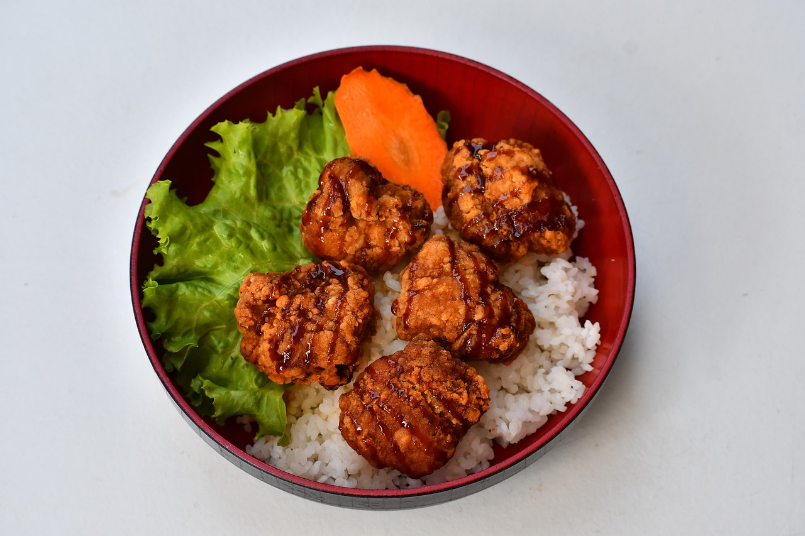

Chicken and Rice
Ingredients
For The Chicken
- 4 bone-in, skin-on chicken thighs (or use boneless thighs/breasts if preferred)
- 1 tsp salt
- ½ tsp black pepper
- 1 tsp paprika
- 1 tbsp olive oil
For The Rice
- 1 medium onion, chopped
- 3 garlic cloves, minced
- 200 g long-grain rice (e.g. basmati or jasmine)
- 500 ml chicken stock (hot)
- 1 tsp dried thyme (or oregano)
- 1 tsp turmeric (optional - adds color and subtle flavor)
- 150 g frozen peas or mixed vegetables (optional)
- Juice of ½ lemon
- Fresh parsley for garnish (optional)
Instructions
Season and sear the chicken
- Pat chicken dry and season with salt, pepper, and paprika.
- Heat oil in a deep skillet or pot over medium-high heat.
- Sear chicken skin-side down for 4-5 minutes, flip, and cook 3 more minutes until golden brown.
- Remove and set aside (don't cook it fully yet).
Sauté aromatics
- In the same pan, add chopped onion. Cook until soft (about 4 minutes).
- Add garlic and cook for 1 more minute.
Add rice and spices
- Stir in rice, thyme, and turmeric. Cook for 1-2 minutes to toast the rice slightly.
Add stock and chicken
- Pour in hot chicken stock and mix well.
- Nestle the seared chicken pieces on top.
- Bring to a boil, then cover and reduce heat to low.
- Simmer for 20-25 minutes, or until rice is cooked and liquid is absorbed.
Final Touch
- If using peas or veggies, add them in the last 5 minutes of cooking.
- Squeeze lemon juice over the dish and garnish with chopped parsley.